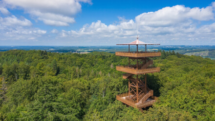
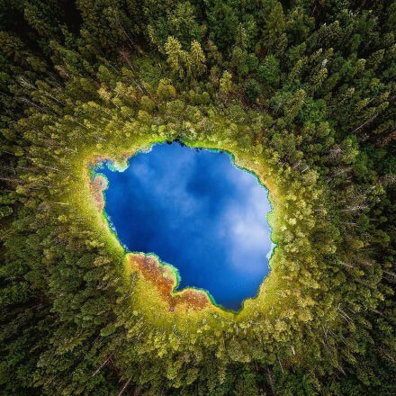
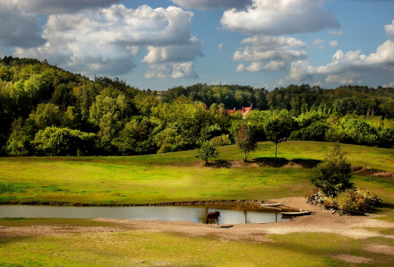
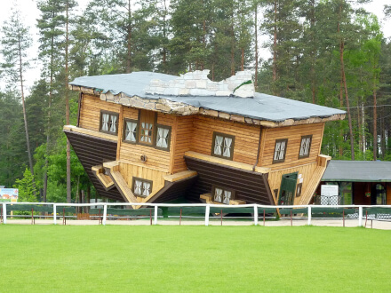
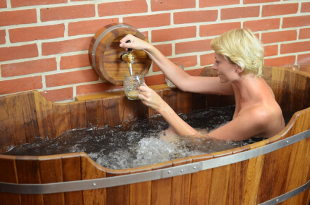
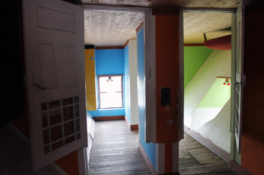
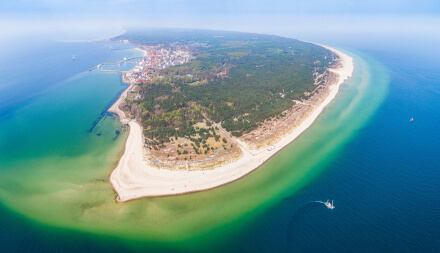
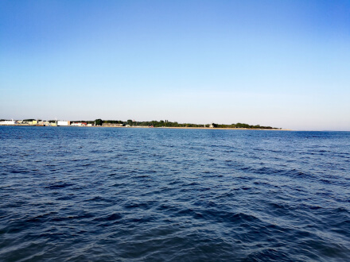
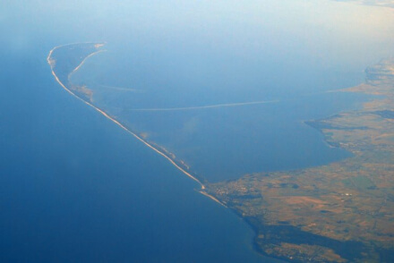

The Land of Kashubia
If there's a more beautiful region in Poland, we are yet to lose to that argument! Described as Poland's little Switzerland by a number of writers, Kashubia (PL: Kaszuby / KS: Kaszëbë) is the picturesque rural area spanning a 100km west of the Tri-city. Blessed with forests, lakes and rustic, pre-industrial architecture, Kashubia is the home of Kashubian people, a Slavic ethnic group whose language is often described as a mix of Polish and Low German - a legacy of the dynamic history of Northern Poland. Notable individuals that share this unique heritage include author Günter Grass and former EU President Donald Tusk. From the forests and lakes of Kartuzy to the farmlands of Szymbark and all the way out to the vast sand dunes around Łeba and further along the gorgeously beach-lined Hel Peninsula, you will rarely find such a diverse geographical region anywhere else in Central Europe. The Kashubians themselves have mythologised that God created the world in 6 days and, with all the leftover bits-and-pieces in his bag of cosmic creativeness, he created Kashubia!
InYourPocket.com - 20 October 2020
Source



A world gone mad in Szymbark
For most Poles, Szymbark is synonymous with midrange supermarket
fruit juice. Aside from fresh produce, Szymbark has a number of
interesting cultural landmarks, most notably (yet) another open-air
museum with traditional Kashubian housing and a Wizard-of-Oz-style
house flipped on its head! In addition, the world's longest plank,
at 46.53m in length, can be viewn here. Behind the open-air museum
is the still-functioning Church of St. Wojciech, a beautiful wooden
structure, built in 1782, featuring a large belfry stands in front
of the entrance a late-baroque Rococo interior.
HAVE A BATH IN BEER!
Just across the field from the upside-down house, you will find the
Kaszëbskô Kóruna brewery, an extention of Hotel Szymbark with a
number of local beers on tap that can be more than just a quick
drink. In a big wooden tub, you can relax with aeration in a
natural, aromatic composition of hops, yeast and beer malt with
herbs. It may sound awful for some, but it great for the skin and
you can have a water-based rinse afterwards. All the while, the wall
tap is available for you to enjoy Kashubian Crown beer to your
heart's content! If you're still not sold on the whole beer-bath
thing, you can just simply dine in 'civilised' fashion downstairs
and accompanied with a huge plate of Kashubian cuisine.
InYourPocket.com - 20 October 2020
Source



The endless beaches on Hel Peninsula
Without a doubt the most unique shape on the Polish coastline, the Hel peninsula has seen many ships come and go over the centuries and the ancestors of the Kashubians, Poles and Prussians who stood on this headland would have no doubt heeded the impending change with each one. You'll find beaches at the localities of Jastarnia, Jurata and the dog-friendly Kużnica, just to name a few. Parking along the peninsula can be a bit of a pain so consider getting the train from Gdynia Główna to Władysławowo and then switch to the local service. This is also a great bike route: a pleasant single road with lots of beach on either side of you. It's a 35km route, very flat and will take you 1hr 40 minutes if you go directly. At the tip of the peninsula, the town of Hel itself is a pleasant fishing port with a Fokarium (Seal Sanctuary) and lots of Kashubian cultural landmarks.
InYourPocket.com - 20 October 2020
Source


